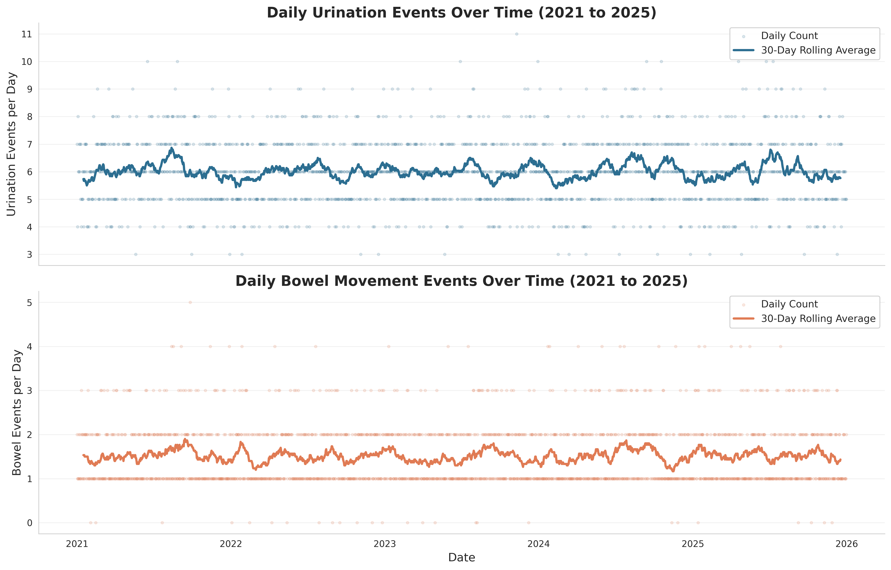
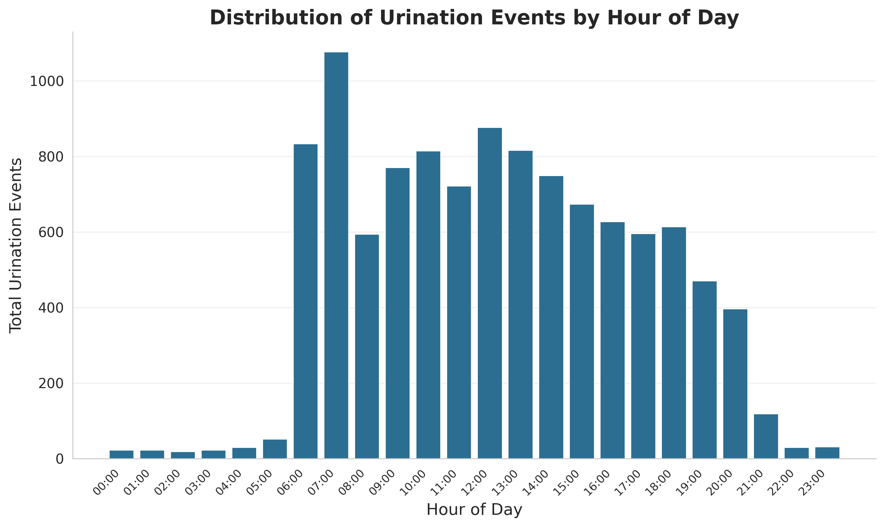
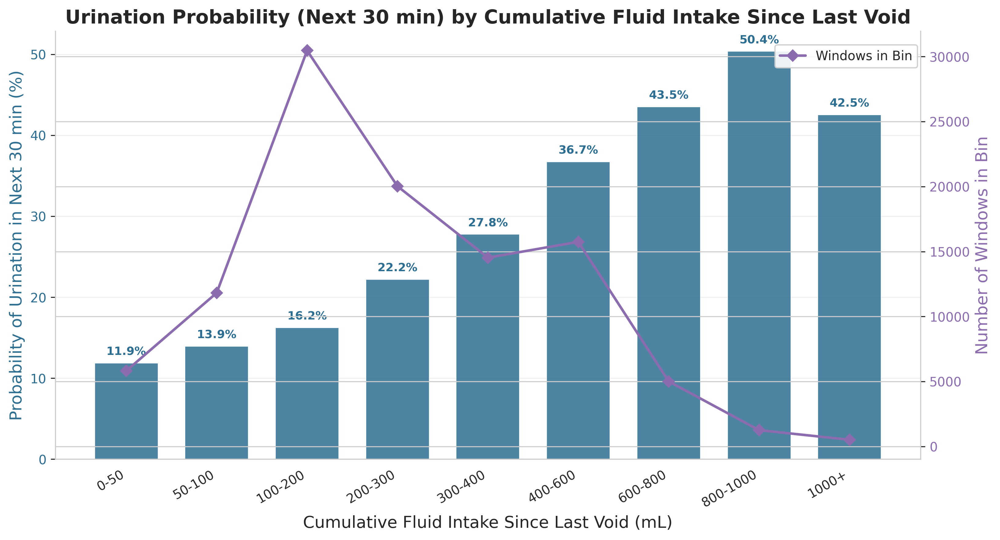
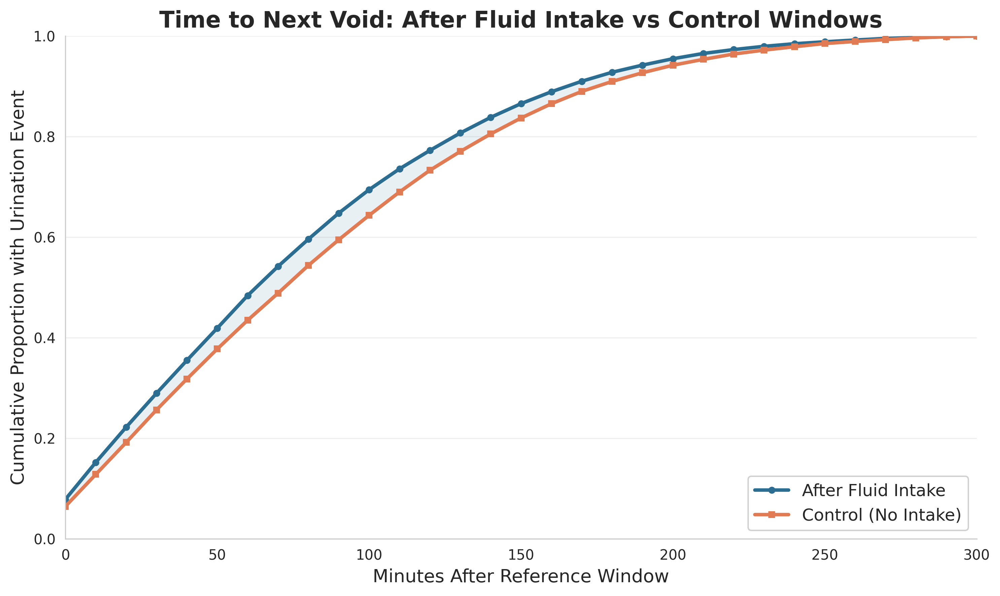
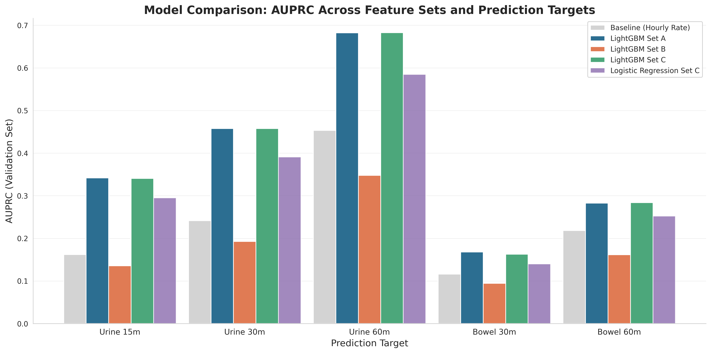
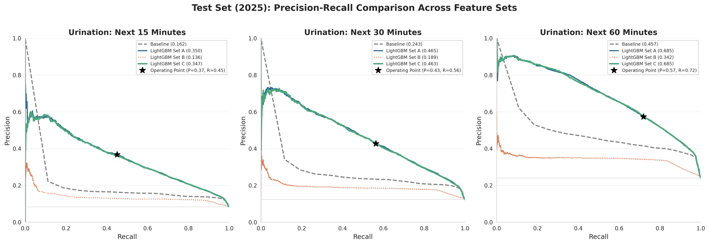
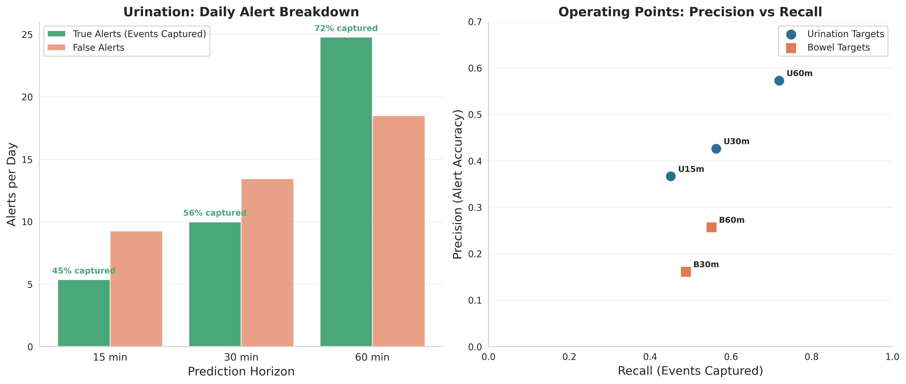
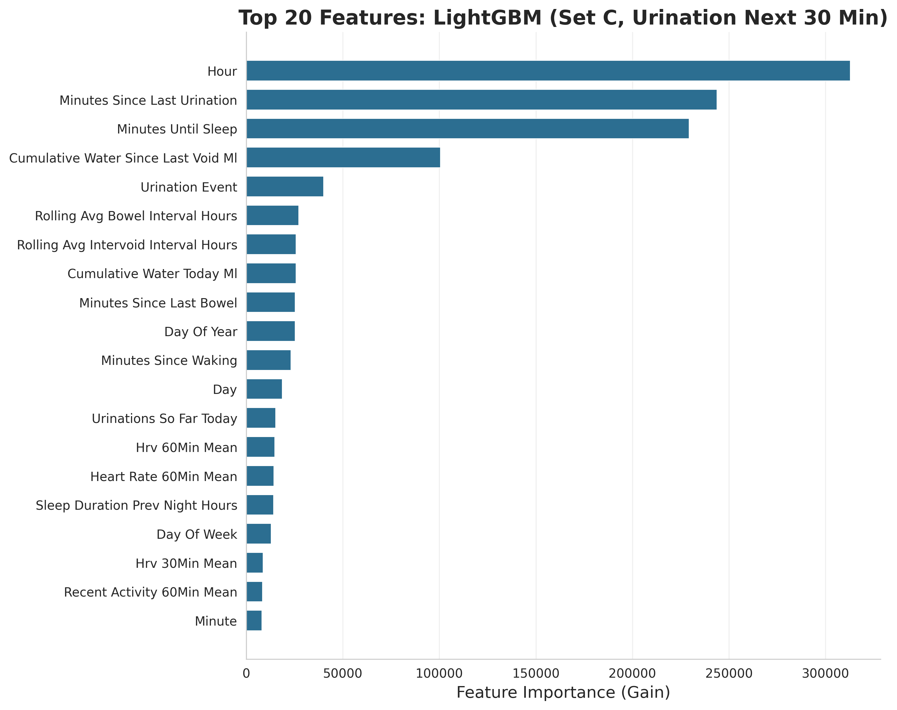
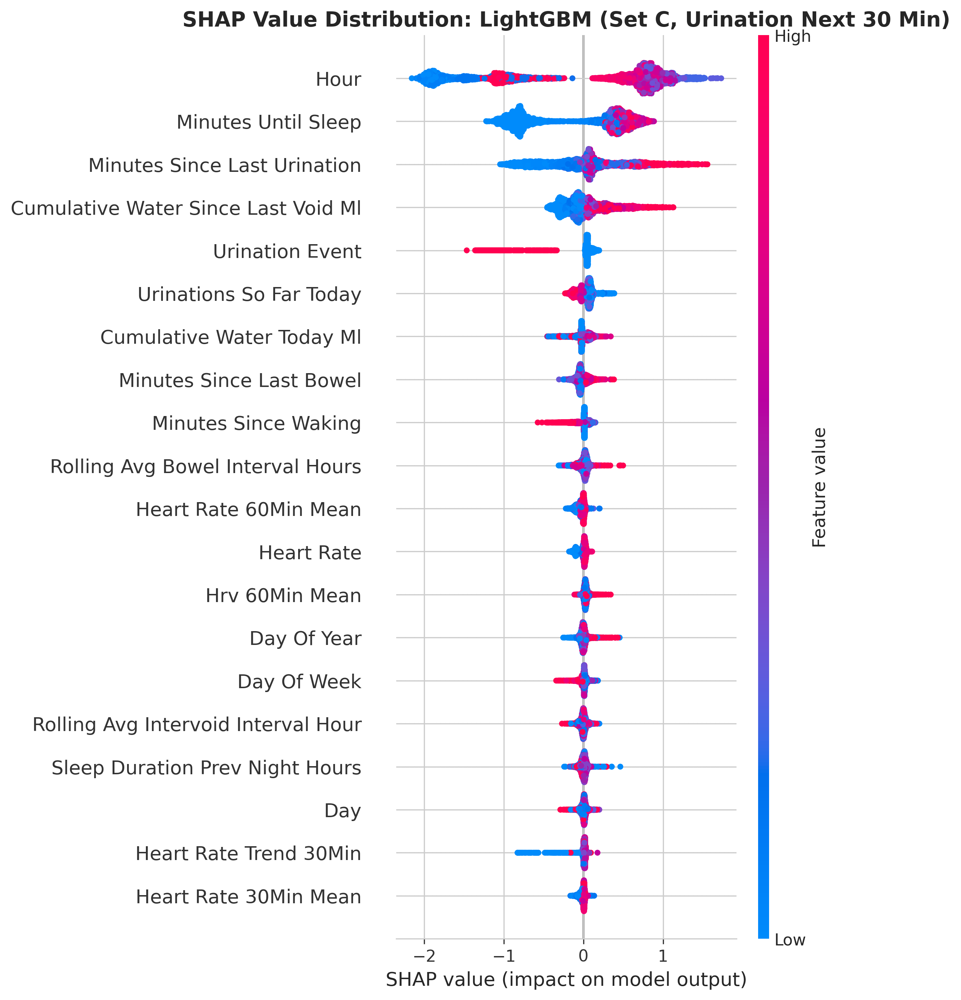

Introduction
Thirty-five percent of children with autism have not achieved consistent toileting by age three. For many, the challenge follows them into adulthood, and it falls on their caregivers to manage it every single day. The tools available to these families have not changed in decades: fixed schedules, rigid prompting, constant vigilance. This study asked a simple question: can we do better?
Methods
Schedule, History, Intake
No wearable needed
HR, HRV, Activity
Wearable only
Combined A + B
Full multimodal
Data Stationarity: Five-Year Stability

Simon et al. (2022), Res. in Autism Spectrum Disorders. Marsack-Topolewski et al. (2021), PLOS ONE. Ali et al. (2022), BMC Med. Informatics. Nan et al. (2024), Sensors. Kline et al. (2022), npj Digital Med. Aguilera et al. (2024), JMIR. Lundberg et al. (2020), Nature Mach. Intelligence. Full list in capstone paper.
Results: Patterns in the Data



97.3% of events during waking hours. Circadian peak at 07:00. Cumulative fluid intake drove a fourfold increase in voiding probability (11.9% → 50.4%). Wearable signals: delta < 0.35 bpm, clinically meaningless.
Results: Prediction Performance


| Target | Baseline AUPRC | Test AUPRC | Improvement |
|---|---|---|---|
| Urination 15 min | 0.162 | 0.350 | +116% |
| Urination 30 min | 0.243 | 0.465 | +91% |
| Urination 60 min | 0.457 | 0.685 | +50% |
| Bowel 30 min | 0.098 | 0.147 | +50% |
| Bowel 60 min | 0.187 | 0.255 | +36% |
Clinical Impact

At the 60-minute urination horizon: the model captures 72% of events with a 43% false alert rate, producing ~25 true alerts and 18 false alerts per day.
What Drives the Predictions?


All four trackable by a caregiver or simple mobile app. No wearable required.